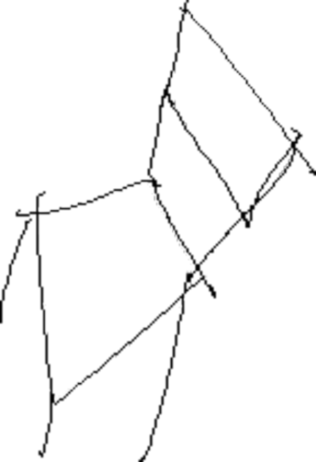

multimedia
about
contact
merchandise
i swallowed a moon made of iron
我咽下一枚铁做的月亮
La Señorita Mundo

press
The Futures Market
Knotty Together
Picnic in the Cemetery
Mr. Shi and His Lover
時先生與他的情人
audio
click me